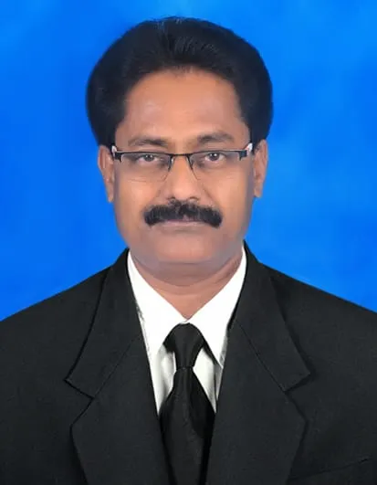

About Us
மனித உரிமைகள் என்பது மனித நடத்தையின் குறிப்பிட்ட தரநிலைகளை நிர்வகிக்கும் தார்மீக யோசனைகள் அல்லது மரபுகள் மற்றும் உள்ளூர் மற்றும் சர்வதேச சட்டத்தால் வழக்கமாக பாதுகாக்கப்படுகின்றன.
Human rights are moral ideas or conventions that govern specific standards of human behaviour and are routinely protected by local and international law.

வயது, இன தோற்றம், புவியியல், மொழி, மதம், இனம் ஆகியவற்றைப் பொருட்படுத்தாமல், “ஒரு நபர் அடிப்படையில் அவர் அல்லது அவர் ஒரு மனிதர் என்பதால்” மற்றும் “அனைத்து மனிதர்களிடமும் உள்ளார்ந்தவர்” என்ற அடிப்படை உரிமைகளாக இவை பொதுவாகப் பிரிக்க முடியாத, அடிப்படை உரிமைகளாகக் கருதப்படுகின்றன. , அல்லது வேறு ஏதேனும் நிலை. அவை எல்லா இடங்களிலும் எல்லா நேரங்களிலும் பொருந்துகின்றன என்ற பொருளில் உலகளாவியவை, மேலும் அவை அனைவருக்கும் ஒரே மாதிரியானவை என்ற பொருளில் அவை சமத்துவம்.
SIHRSJO என்பது தனிப்பட்ட முறையில் அநீதியை ஏற்றுக்கொள்ளும் மற்றும் எந்தவொரு அரசியல் தத்துவம், மதம் அல்லது பொருளாதார நலன்களுக்கும் கட்டுப்படாத மக்களின் இயக்கமாகும். அனைத்து மக்களுக்கும் சுயநிர்ணய உரிமை, கொடுங்கோன்மையிலிருந்து விடுதலை, சுதந்திரமாகப் பேசும் சுதந்திரம் ஆகிய கொள்கைகளை இந்த அமைப்பு கடைப்பிடிக்கிறது. இது பாலியல் வன்முறை மற்றும் சித்திரவதையின் உளவியல் மற்றும் உடல்ரீதியான விளைவுகள், அத்துடன் கொத்தடிமைத் தொழிலாளர், வம்சாவளி அடிப்படையிலான அடிமைத்தனம், கட்டாயத் தொழிலாளர், கட்டாயத் திருமணம், மோசமான குழந்தைத் தொழிலாளர் முறை, புலம்பெயர்ந்த தொழிலாளர்களின் சுரண்டல் போன்றவற்றுக்கு எதிரான விழிப்புணர்வு மற்றும் பிரச்சாரம் ஆகியவற்றில் கவனம் செலுத்துகிறது. அடிமைத்தனம், மற்றும் மனித கடத்தல்.
மேலும், தன்னிச்சையான தடுப்புக்காவல் மற்றும் நாடுகடத்தலில் இருந்து விடுபட அனைவருக்கும் உரிமை உண்டு என்று குழு நினைக்கிறது. SIHRSJO இன் முக்கிய செயல்பாடுகளில் ஆராய்ச்சி, வக்கீல் மற்றும் பரப்புரை, மற்றும் பிரச்சாரங்கள் மற்றும் செயல் ஆகியவை அடங்கும். அரசாங்கங்கள் மற்றும் பிற நிறுவனங்களால் செய்யப்படும் மனித உரிமை மீறல்களில் நம்பகமான, உண்மை அடிப்படையிலான ஆராய்ச்சி செய்யும் நிபுணர்களை குழு வேலைக்கு அமர்த்துகிறது. மனித உரிமை மீறல்களைத் தடுக்க அல்லது தடுக்க தேவையான நடவடிக்கைகளை எடுக்க அரசாங்கங்களையும் முடிவெடுப்பவர்களையும் வற்புறுத்தவும் வலியுறுத்தவும் இந்த பகுப்பாய்வு பயன்படுத்தப்படுகிறது. நடவடிக்கைக்கு அழைப்பு விடுக்க, குழு பிரச்சாரம் மற்றும் மனுக்கள், கடிதங்கள் மற்றும் அணிவகுப்பு போன்ற வக்காலத்து உத்திகளையும் பயன்படுத்துகிறது. இந்த இயக்கம் அனைவருக்கும் மனித உரிமைகளை சமமாக அணுக வேண்டும் என்று வாதிடுகிறது.
These are usually regarded as inalienable, fundamental rights “to which a person is essentially entitled simply because she or he is a human being” and “inherent in all human beings,” regardless of age, ethnic origin, geography, language, religion, ethnicity, or any other position. They are universal in the sense that they apply everywhere and at all times, and they are egalitarian in the sense that they are the same for everyone.
SIHRSJO is a movement of people who take injustice personally and are not bound by any political philosophy, religion, or economic interest. The organisation adheres to the principles of all people having the right to self-determination, freedom from tyranny, and the freedom to speak freely. It focuses on the psychological and physical effects of sexual violence and torture, as well as raising awareness and campaigning against bonded labour, descent-based slavery, forced labour, forced marriage, the worst forms of child labour, exploitation of migrant workers in conditions akin to slavery, and human trafficking.
Furthermore, the group thinks that everyone has the right to be free of arbitrary detention and exile. SIHRSJO’s main operations include research, advocacy and lobbying, and campaigns and action.The group hires professionals who do reliable, fact-based research on human rights breaches committed by governments and other entities. This analysis is then used to persuade and urge governments and decision-makers to take the required actions to stop or prevent abuses of human rights. To call for action, the group also uses campaign and advocacy strategies such as petitions, letters, and marches. The movement advocates for equal access to human rights for all.